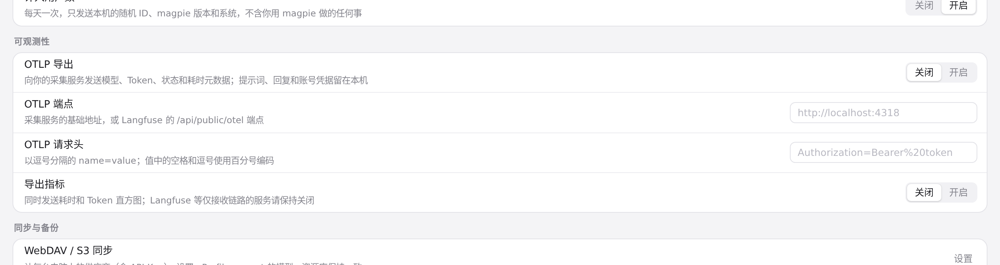
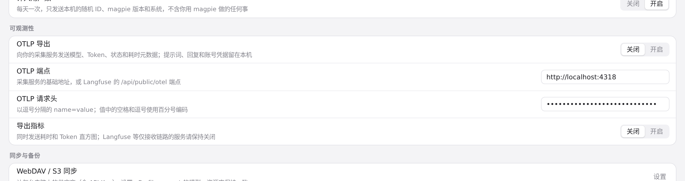
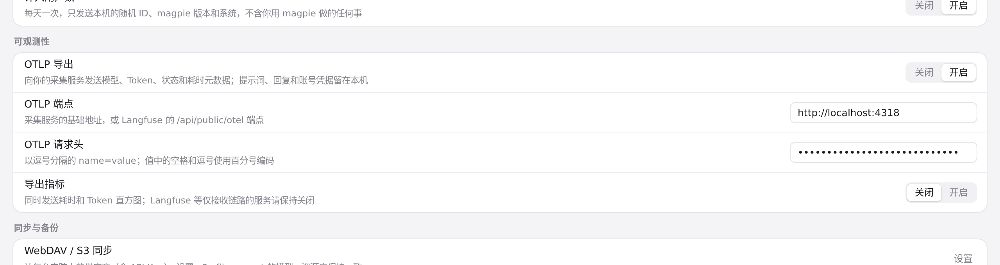
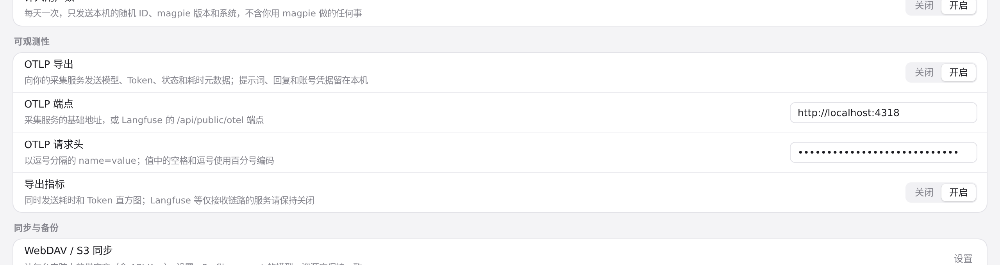

#412 界面预览
commit a85827f · 回到 PR · 在设置页新增「可观测性」一栏：OTLP 导出与导出指标两个开关，以及 OTLP 端点、OTLP 请求头两个输入框，改动随偏好一起保存；当存在 MAGPIE_OTEL_* 环境变量时，该栏底部多一行覆盖提示。
红线是鼠标走过的轨迹，红色圆环是一次点击；底部文字是这一步在做什么。空格暂停，← → 逐段查看。

设置页的可观测性一栏 · 设置页「可观测性」：OTLP 导出、OTLP 端点、OTLP 请求头、导出指标

设置页的可观测性一栏 · 填好端点与请求头后的「可观测性」

设置页的可观测性一栏 · OTLP 导出切到开启后的「可观测性」

设置页的可观测性一栏 · 导出指标切到开启后的「可观测性」